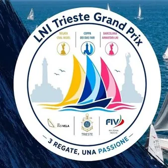

da dom 6 set a ven 9 ott
LNI Trieste Grand Prix
𝘿𝙚𝙗𝙪𝙩𝙩𝙖 𝙣𝙚𝙡 𝙥𝙖𝙣𝙤𝙧𝙖𝙢𝙖 𝙫𝙚𝙡𝙞𝙘𝙤 𝙩𝙧𝙞𝙚𝙨𝙩𝙞𝙣𝙤 𝙞𝙡 𝙇𝙉𝙄 𝙏𝙧𝙞𝙚𝙨𝙩𝙚 𝙂𝙧𝙖𝙣𝙙 𝙋𝙧𝙞𝙭, 𝙪𝙣 𝙣𝙪𝙤𝙫𝙤 𝙥𝙧𝙤𝙜𝙚𝙩𝙩𝙤 𝙘𝙝𝙚 𝙪𝙣𝙞𝙨𝙘𝙚 𝙩𝙧𝙚 𝙧𝙚𝙜𝙖𝙩𝙚 𝙙𝙚𝙡 𝙂𝙤𝙡𝙛𝙤 𝙙𝙞 𝙏𝙧𝙞𝙚𝙨𝙩𝙚 𝙞𝙣 𝙪𝙣'𝙪𝙣𝙞𝙘𝙖 𝙞𝙣𝙞𝙯𝙞𝙖𝙩𝙞𝙫𝙖 𝙙𝙚𝙙𝙞𝙘𝙖𝙩𝙖 𝙖𝙡 𝙢𝙖𝙧𝙚, 𝙖𝙡𝙡𝙖 𝙫𝙚𝙡𝙖 𝙚 𝙖𝙞 𝙫𝙖𝙡𝙤𝙧𝙞 𝙙𝙚𝙡𝙡𝙤 𝙨𝙥𝙤𝙧𝙩. 𝙄𝙡 𝙘𝙖𝙡𝙚𝙣𝙙𝙖𝙧𝙞𝙤 𝙙𝙚𝙡 𝙇𝙉𝙄 𝙏𝙧𝙞𝙚𝙨𝙩𝙚 𝙂𝙧𝙖𝙣𝙙 𝙋𝙧𝙞𝙭: domenica 6 settembre – 38ª Coppa…
 Indicazioni
Indicazioni
- Costi e prenotazioni
- Costo non indicato · Prenotazione non indicata
- Programma
- Programma da verificare. Apri la fonte ufficiale per orari e possibili aggiornamenti.
- In caso di maltempo
- Nessuna indicazione specifica pubblicata.
- Note
- Acquisito automaticamente dalla fonte.
L’EVENTO
Descrizione completa
𝘿𝙚𝙗𝙪𝙩𝙩𝙖 𝙣𝙚𝙡 𝙥𝙖𝙣𝙤𝙧𝙖𝙢𝙖 𝙫𝙚𝙡𝙞𝙘𝙤 𝙩𝙧𝙞𝙚𝙨𝙩𝙞𝙣𝙤 𝙞𝙡 𝙇𝙉𝙄 𝙏𝙧𝙞𝙚𝙨𝙩𝙚 𝙂𝙧𝙖𝙣𝙙 𝙋𝙧𝙞𝙭, 𝙪𝙣 𝙣𝙪𝙤𝙫𝙤 𝙥𝙧𝙤𝙜𝙚𝙩𝙩𝙤 𝙘𝙝𝙚 𝙪𝙣𝙞𝙨𝙘𝙚 𝙩𝙧𝙚 𝙧𝙚𝙜𝙖𝙩𝙚 𝙙𝙚𝙡 𝙂𝙤𝙡𝙛𝙤 𝙙𝙞 𝙏𝙧𝙞𝙚𝙨𝙩𝙚 𝙞𝙣 𝙪𝙣'𝙪𝙣𝙞𝙘𝙖 𝙞𝙣𝙞𝙯𝙞𝙖𝙩𝙞𝙫𝙖 𝙙𝙚𝙙𝙞𝙘𝙖𝙩𝙖 𝙖𝙡 𝙢𝙖𝙧𝙚, 𝙖𝙡𝙡𝙖 𝙫𝙚𝙡𝙖 𝙚 𝙖𝙞 𝙫𝙖𝙡𝙤𝙧𝙞 𝙙𝙚𝙡𝙡𝙤 𝙨𝙥𝙤𝙧𝙩.
𝙄𝙡 𝙘𝙖𝙡𝙚𝙣𝙙𝙖𝙧𝙞𝙤 𝙙𝙚𝙡 𝙇𝙉𝙄 𝙏𝙧𝙞𝙚𝙨𝙩𝙚 𝙂𝙧𝙖𝙣𝙙 𝙋𝙧𝙞𝙭:
domenica 6 settembre – 38ª Coppa dei Due Fari – Trofeo G. Lodato, la storica regata della Lega Navale Italiana di Trieste.
sabato 12 settembre - Regata CRAL Insiel, spirito di squadra, formazione e inclusione, che unisce competizione, divertimento e solidarietà.
venerdì 9 ottobre – Regata Armatori LNI, tradizionale appuntamento nella settimana della Barcolana.
Il Grand Prix nasce dalla collaborazione tra CRAL Insiel Regata Cral Insiel , Lega Navale Italiana Sezione di Trieste, ASD Insivela e XIII ZONA FIV , con l'obiettivo di promuovere la vela non solo come disciplina sportiva, ma anche come occasione di crescita, condivisione e partecipazione.
Ad arricchire l'iniziativa sarà inoltre il Trofeo del Centenario, realizzato grazie alla collaborazione con la Comunità degli Italiani di Isola: un simbolico ponte tra Trieste e l'Istria che celebra una storia comune e il profondo legame con il mare.
Tre grandi appuntamenti, un unico filo conduttore: la passione per il mare che unisce sport, tradizione e comunità.
IL PROGRAMMA
Programma e orari
Appuntamenti raccolti dalle fonti elencate. Dove manca un orario, non è ancora disponibile in questa scheda.
Programma pubblicato
- Dal 2026-09-06 al 2026-10-09
INFORMAZIONI UTILI
Prima di partire
- Controllare la fonte prima di partire.
ORGANIZZAZIONE